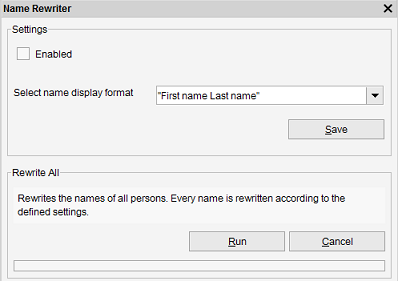

Person Name Rewriting
Menu path: Tools > Name Rewriter
This tool enables Data Crow to rewrite the names of new persons and / or rewrite all names for all persons of this module.

Enabled
Check the field enabled to rewrite titles for new items (and when updating existing titles). Disable this functionality by unchecking the enabled box (default).
Display order
Select the appropriate display order.
Rewrite all names
Rewrites all name of all persons present in this module